#install.packages("gradientForest", repos="http://R-Forge.R-project.org")
library(gdm) #notice the warnings, we can talk about this
library(gradientForest)
library(raster)Future projections with GDM & GFs
Instructor: Riginos
GEAs with Generalized dissimilarity modeling & Gradient forests
Developed for community ecology and adopted by landscape genetics (in community ecology, the biological data are species observations)
Focus on beta-diversity or turnover, show rates of biological change in similar (non linear) manners
Can predict genetic diversity across landscapes - environmental and geographic predictors can act as surrogates for turnover in genetic diversity (species distribution modeling makes the same assumption)
Being used to estimate genetic match/mismatch to future climate conditions
Uses distances: it is a link based analysis (second column in Wagner & Fortin diagram)
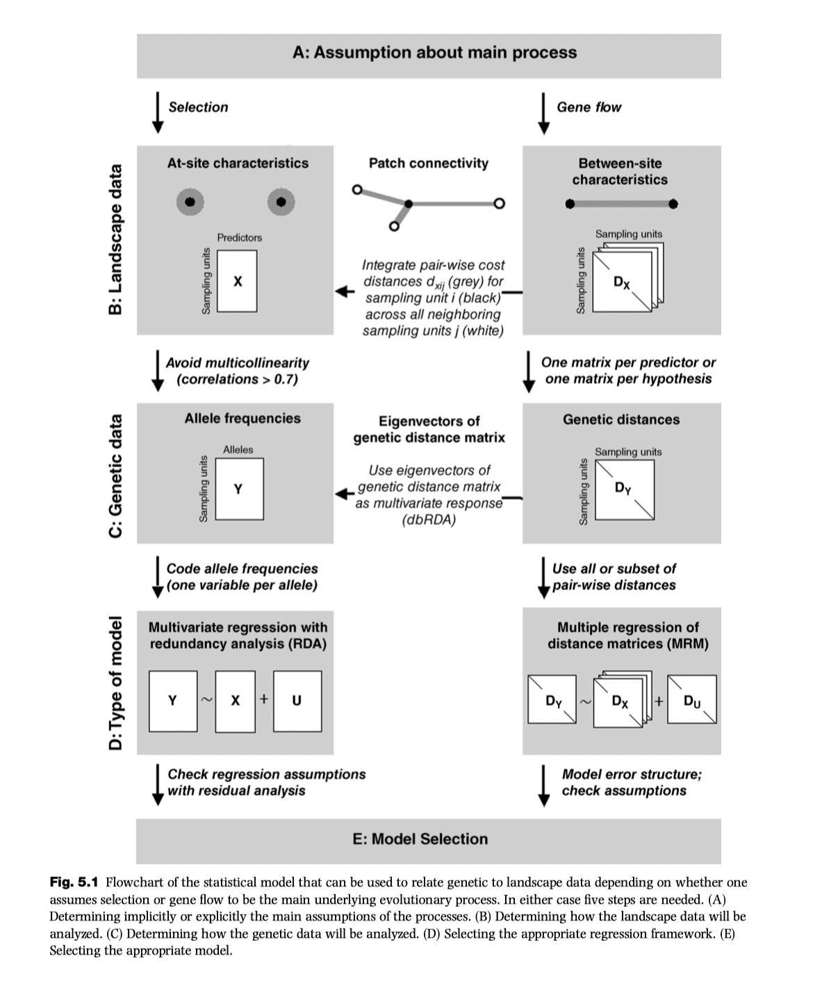
GDM
Theory/Background for GDM
Managing non linearity
GDM is non linear extension of matrix regression that uses dissimilarities in both predictor and response variables:
- Basic linear model: \(d_{ij} = a_0 + \sum_{p=1}^na_p|x_{pi}-x_{pj}|\)
Modified to account for two aspects of non linearity:
Bounded compositional dissimilarity: \(d_{ij} \sim (0,1)\)
Variable rate of turnover
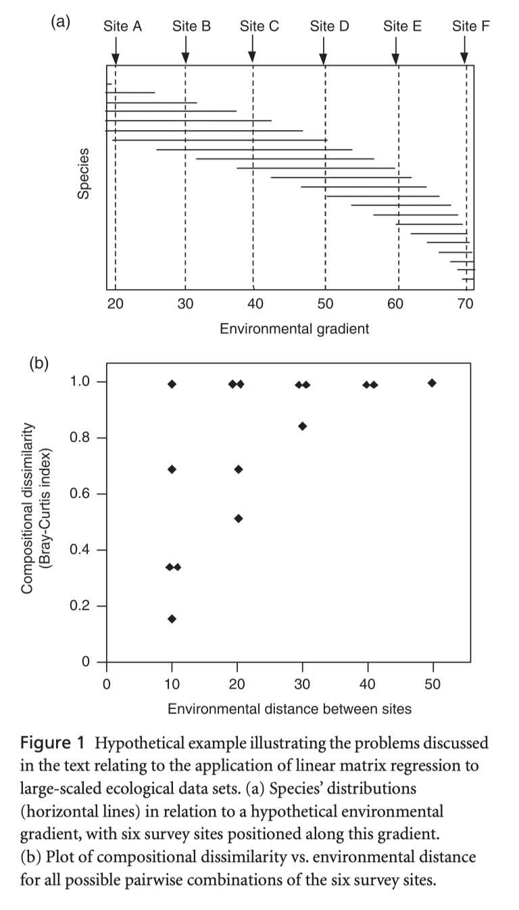
Solution for #1, use a generalized linear model that defines relationship between predictor (\(\eta\)) and response (\(\mu\))
Link function: \(\mu = 1 - e^{\eta}\)
Binomial variance: \(V(\mu) = \frac{\mu(\mu-1)}{s_i+s_j}\)
Solution for #2: fit nonlinear functions to the environmental variables, not their distances
GLM equation is now changed to include functions for x
- \(\eta = a_0 + \sum_{p=1}^n|f_p(x_{pi})-f_p(x_{pj})|\)
an I-spline basis function is used as a function
- \(f_p(x_p)= \sum_{k=1}^{m_p}a _{pk}I_{pk}(x_p)\) (k splines per predictor)
So, GLM becomes: \(\eta = a_0 + \sum_{p=1}^n\sum_{k=1}^{m_p}a_{pk}|I_{pk}(x_{pi})-I_{pk}(x_{pj})|\)
Fitting a GDM model
compute \(d_{ij}\) between all sites (n x n matrix)
derive a set of \(m_p\) I-spline basis functions for each environmental variable and calculate value (\(I_{pk}(x_p)\))for each site
Calculate \(\Delta I_{pk}\) for each pair of sites
For geographic and other distances, derive I-spline basis functions directly
Use maximum likelihood to fit coefficients
Contribution of each predictor evaluated by comparing deviance of model with and without the factor
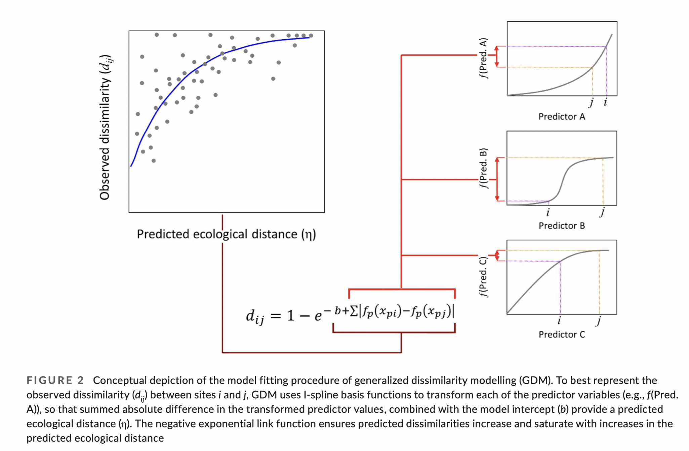
Examining the I-splines
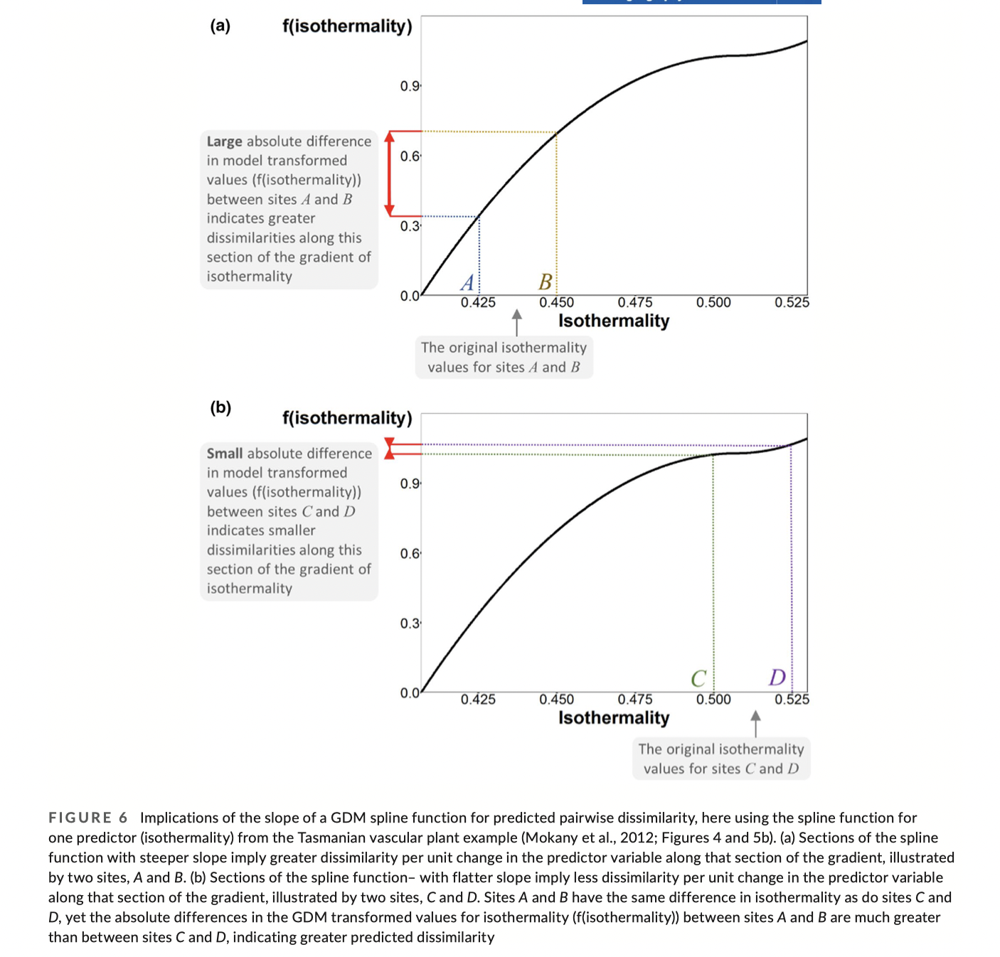Uses of GDM
GDM applications (species diversity)
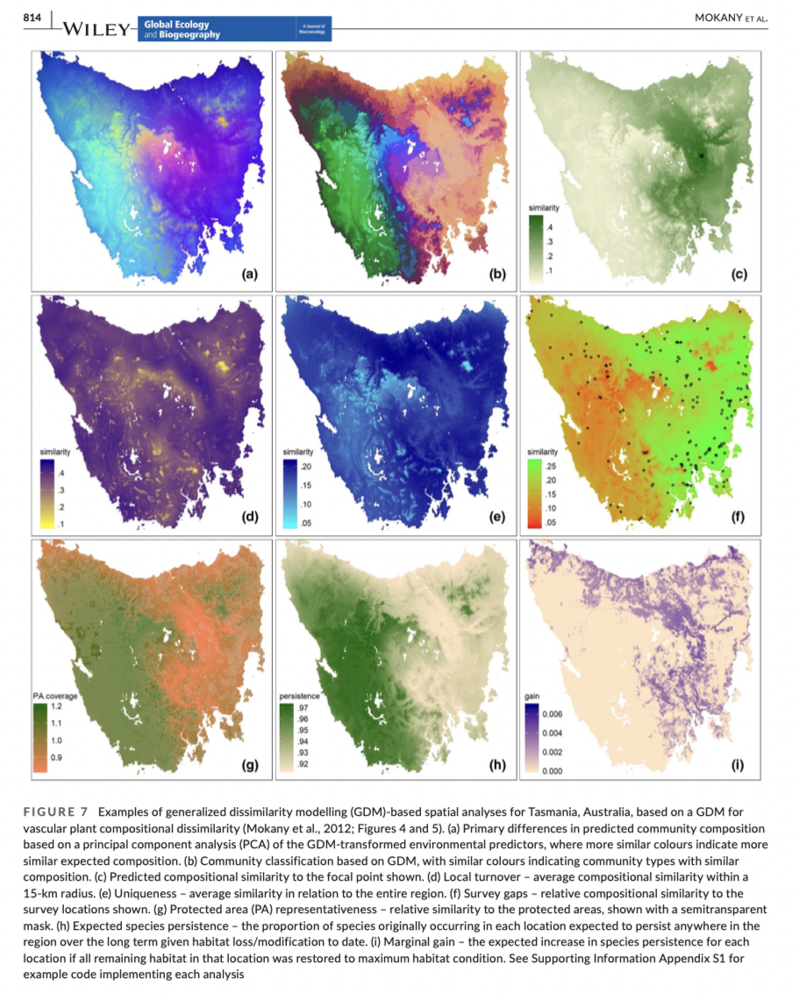
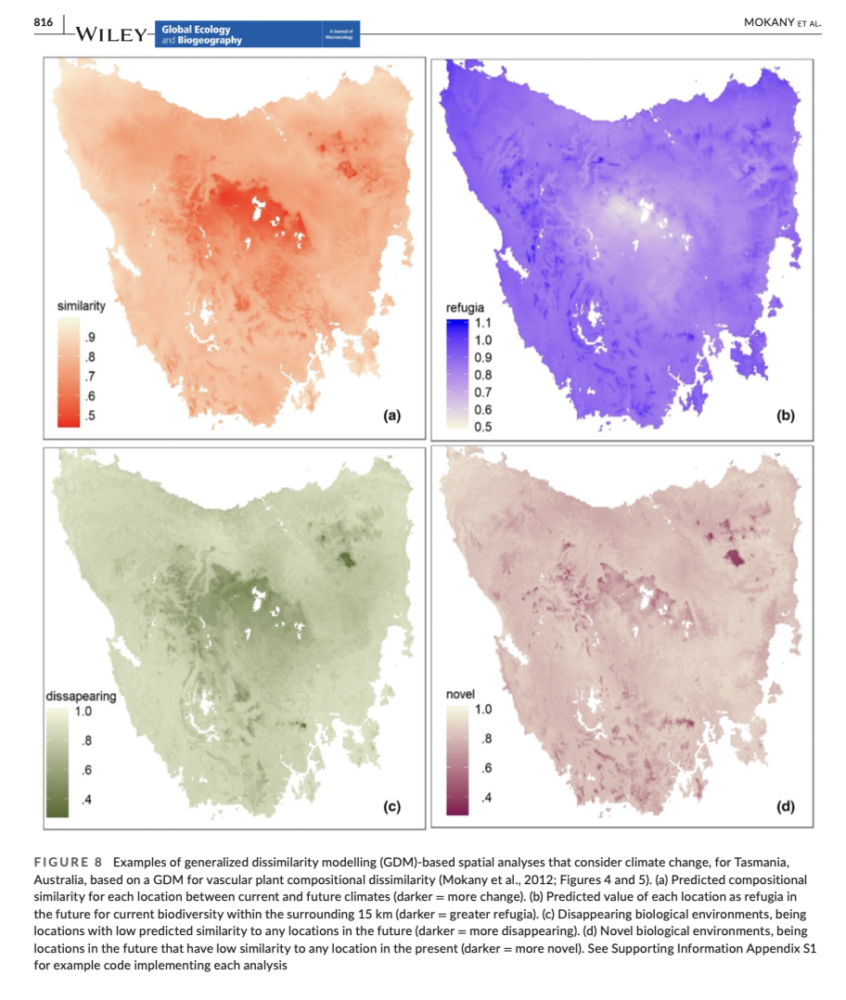
Advantages and limitations of GDM
Positives
Very flexible on data types
Computation (for genetic analyses) does not scale with number of loci
Does not assume linearity
Can yield predictions for gridded landscapes
Drawbacks
Predictor distances are symmetric
Predictions in a large gridded landscape: computationally challenging (grid cell number choose 2 combinations)
Interactions between predictors are not modeled
Non independence of sites not accounted for if all sites used (Mokany et al. 2022)
Alternative link functions might be more appropriate
Gradient forests
Gradient forests is a machine learning approach based on random forests. Random forests are suited to predicting one outcome (such as the presences or absence of a specific species). Gradient forests puts together outcomes from many random forests (building information on a community of species or many loci).
Theory
Random forests
Creates an ensemble of trees per species, these trees are split into partitions
Observations (sites for species, populations for genetics) are picked at random for each regression tree
For each node in the regression tree, predictor variables are selected at random and evaluated
Sites are split by a predictor value, s
Splits are chosen to create homogenous groups (measured by the sum of squared deviations about the group mean, called the impurity); the importance of each split is the reduction in impurity introduced by the split
Splitting occurs recursively until the tips are reached
Random forest = ensemble of trees where each trees is a bootstrap partition
Cross validation using “in bag” and “out of the bag” comparisons
Confused? Me too! Let’s watch this video to get a better understanding…
Gradient forests
Combines ensembles of random forests to summarize importance of predictors and compositional turnover rates by predictor values.
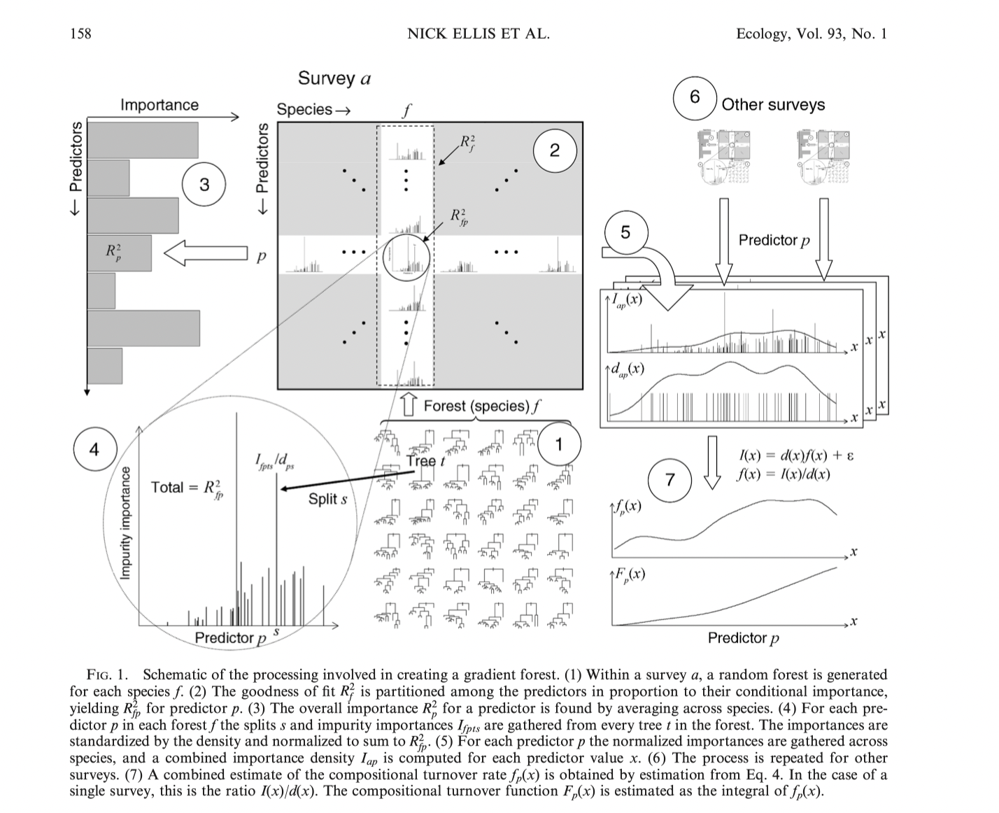
GF applications (species diversity)
Example - outcomes for species abundance for species on the Great Barrier Reef
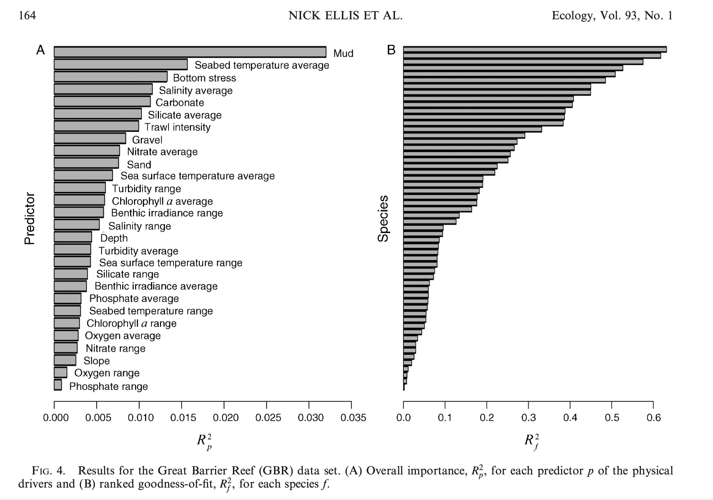
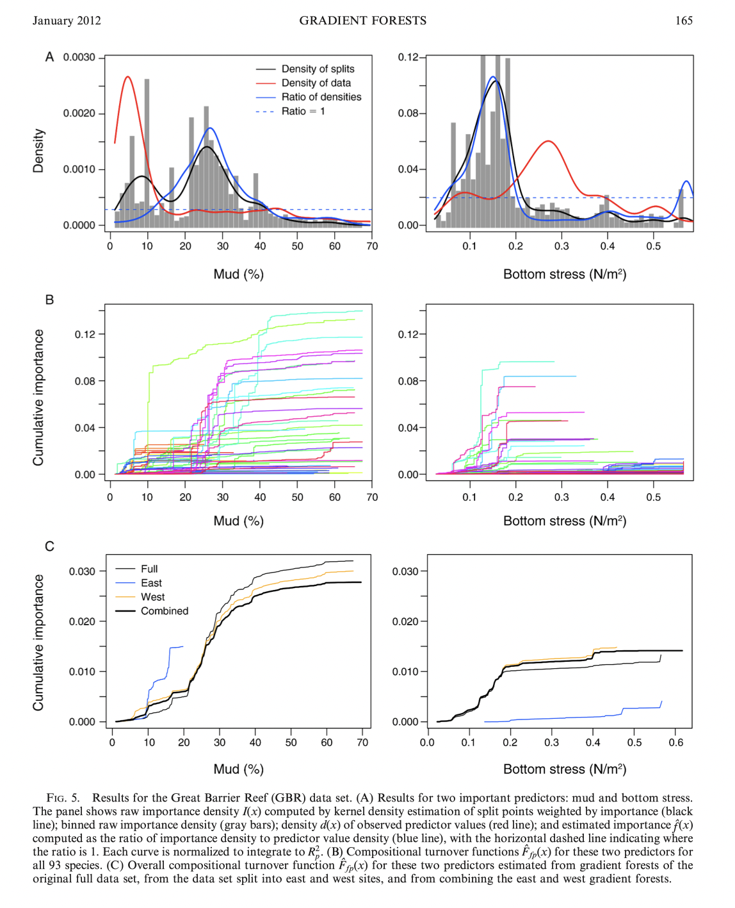
Other applications
Predicting biological turnover from environmental variables
Gap analyses of surveys
Identifying environmental thresholds to push community into a different state
Advantages and limitations of GF
Positives
- Summarizes complex relationships with high predictive power - no variable transformation required
- Species can be sampled in different ways and combined
- Compositional dissimilarity is not bounded at 1
- Correlated predictors should not affect results within the training region (but could if model is applied to new regions)
Negatives
- Does not explicitly deal with spatial location (positions can be added as variables)
- Small scale autocorrelation could cause problems - sample at distances larger than local SA
GDM and GF applied to genomic data
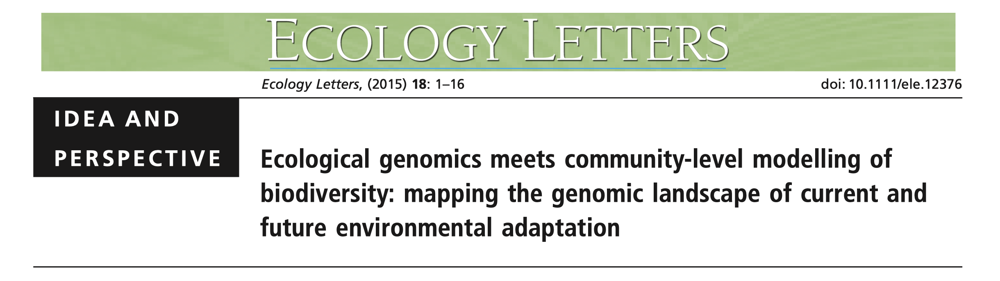
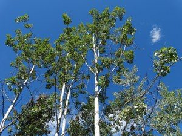
Fitzpatrick & Keller 2015 aimed to
model how genetic diversity changes across a complex environmental landscape, especially for “adaptive” loci
project gene-environment relationships in space and time to yield landscape predictions and infer how environmental change will affect gene-environment associations
This publication coined the term “genetic offset”
“The future projection of genetic composition informs us about how much the genetic composition across the landscape would have to change to preserve the gene–environment relationships observed under current environmental conditions.”
“Of course, the actual evolutionary responses of populations to environmental change will be more complex than this simplified projection, and likely to involve interactions between selection, the effective population size, which determines the efficacy of selection response, and the evolutionary processes shaping adaptive variation (e.g. migration, mutation, recombination).”
The data set
- Reference SNPs
- 412 SNPs = genomically random
- 31 populations
- 474 individuals
- Candidate loci
- 335 SNPS from flowering genes
- 443 individuals from 31 populations
- SNPs from specific candidate loci
- previous outlier analyses identified GIGANTEA-5 (GI5), FRIGIDA (FRI) and LEAFY (LFY)
- Environmental variables: 6
- Spatial structure (population history) accounted for by using geographic distance for GDM and MEMs for GF
- GDM - response variables are pairwise Fst
- GF - response variables are allele frequencies
Results
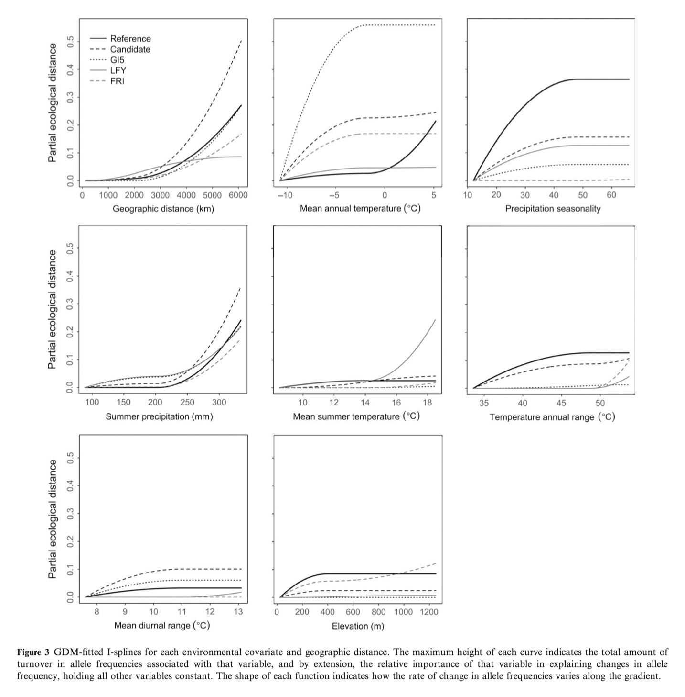
See Figure 2 in the original paper for similar GF results as above.
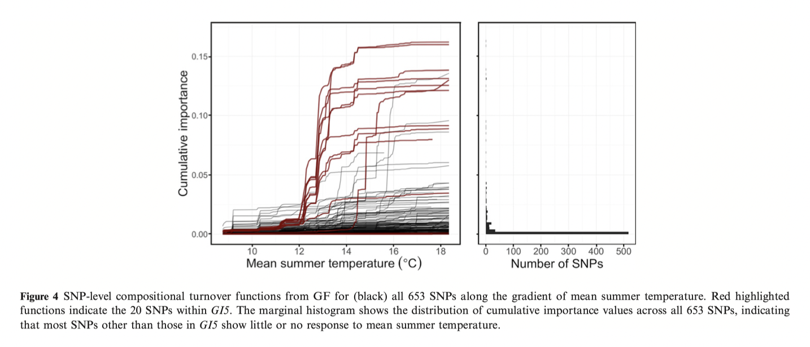

Notes developed from:
- Ellis, N., Smith, S. J., & Pitcher, C. R. (2012). Gradient forests: calculating importance gradients on physical predictors. _Ecology, 93_(1), 156-168.
- Ferrier, S., Manion, G., Elith, J., & Richardson, K. (2007). Using generalized dissimilarity modelling to analyse and predict patterns of beta diversity in regional biodiversity assessment. _Diversity and Distributions, 13_(3), 252-264.
- Fitzpatrick, M. C., & Keller, S. R. (2015). Ecological genomics meets community-level modelling of biodiversity: mapping the genomic landscape of current and future environmental adaptation. _Ecol Lett, 18_(1), 1-16.
- Mokany, K., Ware, C., Woolley, S. N. C., Ferrier, S., Fitzpatrick, Matthew C., & Bahn, V. (2022). A working guide to harnessing generalized dissimilarity modelling for biodiversity analysis and conservation assessment. _Global Ecology and Biogeography, 31_(4), 802-821.
Computer tutorial
Overview
This tutorial will provide the briefest introduction to GDMs and GF’s and their usage in landscape genomics.
These methods are included because the represent different ways of approaching landscape data and are often encountered in genomic prediction studies.
The scripts support the analyses presented in Fitzpatrick and Keller 2015 on balsam poplar and are based on the scripts and data found on Data Dryad.
Unfortunately the authors did not make their spatial data layers available (likely due to large file sizes) and therefore we cannot recapitulate their landscape projections to look at genomic offsets. We will do this later based on an RDA method.
As we have encountered before, support for the packages GDM and gradientForest might not be fully up to date with developments in R spatial data handling.
All data from: Fitzpatrick, M. C., & Keller, S. R. (2015). Ecological genomics meets community-level modelling of biodiversity: mapping the genomic landscape of current and future environmental adaptation. Ecol Lett, 18(1), 1-16.
GDM
Remember that GDM is based on distances between sites. If you examine the gdmData file you will see that each row contains information regarding the relationship between a pair of sites.
Genetic data - Representing the genetic response variables are FST values for various sets of data (reference loci, candidate, GI5, etc.) These Fst values have been scaled and centered.
Coordinates - The locations of each population pair are included as x and y coordinates.
Environmental distances - expressed as \(\Delta I_{pk}\) values - these have been calculated already by running the function
formatsitepair(). If you were preparing your own data, you would need to run this function to fit the splines.
Fitting and examining the GDM model
We will focus on the reference and GIGANTEA-5 (GI5) datasets. To fit the models, individual dataframes need to be constructed.
The datafile should be preloaded, otherwise download from here.
# import GDM ready table
gdmData <- read.csv("./data/poplarFst.ENV.data.4.GDM.csv")
# build individual SNP datasets
SNPs_ref <- gdmData[,c(1,6:24)] # reference
GI5 <- gdmData[,c(3,6:24)] # GIGANTEA-5 (GI5)
# fit and plot GDM for reference SNPs
gdmRef <- gdm(SNPs_ref, geo=TRUE) #gives warning but works
gdmRef$explained # From F&K2015: "GDM explained more than 63% of the deviance in turnover in genetic composition of reference"
plot(gdmRef)
refSplines <- isplineExtract(gdmRef) # extract spline data for custom plotting
# fit and plot GDM for GI5 SNPs
gdmGI5 <- gdm(GI5, geo=TRUE) #ignore warning
gdmGI5$explained
plot(gdmGI5)You will recognize some of the plots from Figure 3. Notice how variable the spline functions can be.
GF
In contrast to GDM, GF is site based. Therefore each row in the dataframe corresponds to a site (population).
Coordinates - The locations of each population are included as x and y coordinates.
Environmental values - Appear to be raw values.
MEMS - are included as additional spatial variables.
Genetic data - Are allele frequencies. (Columns 14-373 are reference loci =360 loci, does not match the paper!)
Fitting and examining the GF model
As before, we focus on the reference and GIGANTEA-5 (GI5) datasets. And make individual dataframes to feed into the analyses.
The datafile should be preloaded, otherwise download from here.
gfData <- read.csv("./data/poplarSNP.ENV.data.4.GF.csv")
envGF <- gfData[,3:13] # get climate & MEM variables
# build individual SNP datasets
SNPs_ref <- gfData[,grep("REFERENCE",colnames(gfData))] # reference 360 loci
GI5 <- gfData[,grep("GI5",colnames(gfData))] # GIGANTEA-5 (GI5)
maxLevel <- log2(0.368*nrow(envGF)/2) #account for correlations, F&K set this flag but do not explain beyond saying "see ?gradientForest"
# Fit gf models for reference SNPs
gfRef <- gradientForest(cbind(envGF, SNPs_ref), predictor.vars=colnames(envGF), response.vars=colnames(SNPs_ref), ntree=500, maxLevel=maxLevel, trace=T, corr.threshold=0.50)
# Fit gf models for GI5 SNPs
gfGI5 <- gradientForest(cbind(envGF, GI5), predictor.vars=colnames(envGF),
response.vars=colnames(GI5), ntree=500,
maxLevel=maxLevel, trace=T, corr.threshold=0.50)
# plot output, see ?plot.gradientForest
plot(gfRef, plot.type="O") # values that feed into Fig1
plot(gfRef, plot.type = "C") # Fig2
plot(gfRef, plot.type = "S")
#can do the same for GI5Points for class discussion
What are the points of difference and similarity between GDM and GF? Which might you use in what context?
The GDM example used pairwise FST values. Does this seem like a reasonable choice? What implicit assumptions go into this choice?
There were major reproducibility issues in trying to reconstruct the analyses! Spatial data sets are missing, packages are old and not necessarily updated…. what best practices could we follow to mitigate such problems?